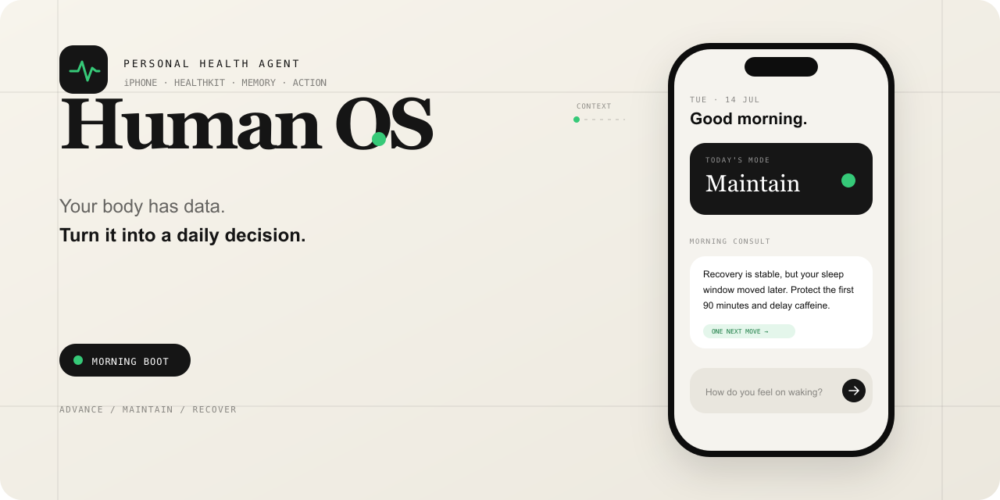

01 / 一个亲身经历的问题
有效了三天，
然后生活发生了。
我一直在尝试用 AI 修复自己的睡眠。该做什么其实很清楚：调暗灯光，放下手机，关闭通知。于是，我把它们编成了一套按时执行的规则。
后来，我在《规则的死亡》中写下这段经历：一顿迟来的晚餐、一场重要的对话，或一次午夜的创意爆发，就足以打乱计划。原本用于帮助我的系统，开始成为愧疚的来源。
调暗灯光
放下手机
按时入睡
静态计划的示意一场还没结束的谈话。
一个刚刚出现的想法。
一个与昨天不同的自己。
“你在强迫一个动态的、混乱的、
情绪化的人去符合静态的指令。”
产品问题逐渐变得具体：当身体状态和现实安排变化时，系统能否帮我重新判断今天怎么过？这成为 Human OS 的起点。
02 / 从固定时间，到当下判断
规则是路径，
原则是导航。
“晚上十点调暗灯光”规定了一条路径。“创造让自己在睡前平静下来的条件”则保留了目的，也给变化留下空间。我希望 AI 能在同一个长期意图下，根据眼前的情境重新寻找方法。
时间到了，
执行同一条指令。
情境改变，仍然沿用昨天的安排。
情境变了，
重新判断下一步。
保留目标，允许时间和方法调整。
身体数据
HealthKit 中可读取的记录
主观感受
用户此刻的自然语言描述
生活上下文
对话中提到的安排与记忆
回复 · 调用工具 · 等待 · 暂不行动
03 / 一边使用，一边推翻自己
把手动习惯做进 App，
再重新思考它的内核。
手动使用时，我真正重复做的是：发身体数据、说今天发生了什么、讨论下一步，再留下记录。早期资料复盘里，自由的“诊断与建议”被使用了约十次，固定清单和预设协议几乎没有被使用。
于是，第一步收敛为一句话：把现在手动做的事去掉手动。随着 iOS 原型逐渐完整，新的矛盾又出现了：如果每一步仍由脚本安排，模型的判断空间究竟在哪里？
- 01
手动 Human OS
先找到会被反复使用的行为。
截图 + 自然对话 + 日志。保留有效的复盘习惯，收起没有持续使用的清单。
得到：真实使用方式 - 02
iOS 产品原型
把身体数据、对话和记忆连起来。
接入 HealthKit，尝试晨间对话、Daily Digest 与 Obsidian 记忆；逐渐发现固定工作流与硬编码规则过重。
暴露：流程替模型作了太多决定 - 03
具身操作 · 当前技术 MVP
事件负责唤醒，Agent 决定下一步。
重建通用执行内核，把健康、提醒、记忆做成能力包；补齐授权、回读、执行记录和恢复。
验证：自主判断需要可靠的执行边界

把一天的判断，
留在同一条时间线上。
Daily Log 按日期回看公开 Episode、用户提问与 Agent 的回复。这张图使用虚构演示内容，展示的是产品结构。
04 / 从文章走向产品
给判断留出空间，
为行动建立边界。
《规则的死亡》表达了我希望系统适应人的方向。真正开发时，我还需要回答另一半问题：当路径由模型选择，怎样确保它读到了真实数据，又怎样避免它未经确认就改变现实？
原则引导
情境中的判断。
约束保护
现实中的行动。
先取到证据，再回复。
健康问题需要按需调用工具，把时间范围、单位与真实结果送回模型。缺少数据时说明缺失，不能把它当成零。
一次早期运行中，模型收到“不支持该指标”的反馈后，查询能力目录，改用了可用数据。数据变了，可以先保持沉默。
HealthKit 连续回调曾触发多轮运行。后来加入事件合并，也把内部数据更新与用户可见消息分开。
等待和暂不行动是合法结果；每次事件不必都变成一条建议。工具提出动作，用户保留决定权。
创建提醒需要先展示待批准请求。通过确认后再执行，并读取系统中的实际结果，随后才告诉用户完成。
同一请求要有执行记录，应用重启后也不能随意重做。05 / 让一个动作经得起检查
“明早九点，
提醒我做一次复盘。”
这句话很简单，却会在手机里产生一个真实记录。我把“建议执行”“用户批准”“写入成功”和“结果已验证”分成不同状态，避免把模型的一句回答当成任务完成。
先展示将要做什么，
再让用户决定。
待批准状态会列出提醒标题和时间。画面停在授权之前；下方交互可以体验批准、拒绝与恢复这三条路径。
我准备创建这条提醒，请你确认。
状态复盘
明天 · 09:00
批准后，将写入系统提醒事项。
提出动作
准备创建提醒的标题与时间
用户确认
暂停，尚未写入系统
执行一次
沿用同一请求的执行记录
回读结果
核对实际标题与时间
回复完成
依据工具返回的结果作答
批准前不执行。可以先模拟重启，观察请求如何保留。
这是页面内的状态演示，不连接模型、HealthKit 或你的提醒事项。模拟重启用于解释恢复逻辑。
iPhone 15 Pro 上已验证：拒绝不执行；批准后恢复原请求；回读标题与时间一致；对应执行记录只有一条成功结果；待批准状态在重新安装或重启测试后仍可继续。
展开：这些状态在工程里怎样连接
模型提出工具调用 → 参数校验 → 权限检查 → 保存待确认请求 → 用户决定 → 持久化幂等记录 → EventKit 执行 → 回读验证 → 记录结果 → 返回模型。
进程中断时保存 checkpoint；恢复时沿用原 episode。幂等与不确定状态处理用于降低重复执行风险，不承诺所有故障下“恰好一次”。
06 / 在 Codex 中，把判断变成可检查的实现
每一轮开发，
都回到一个验证问题。
整个项目主要在 Codex 中推进：从产品讨论、范围收缩和架构重构，到代码、测试与文档整理。我负责定义问题、确定边界、设计失败场景，并在 iPhone 上确认实际表现。
7 月 24—27 日是当前内核的核心开发阶段，之后继续补充 Today 体验、测试与开源整理。时间虽短，我优先验证了三件事：能否读到真实数据、能否安全执行动作、能否在中断后继续。
- 01
定义问题
从真实使用记录收缩范围
- 02
拆分实现
在 Codex 中完成纵向切片
- 03
制造失败
拒绝、缺失、中断与重复
- 04
真机复核
读取系统中的实际结果
- 确定性测试
- 277项
- 测试套件
- 39组
- 关键链路验收
- iPhone
15 Pro
测试数量来自当前仓库 README；真机结论来自 7 月 25 日验收记录。确定性测试验证执行框架，模型在真实情境中的选择还需要持续评估。
一个能运行、
能检查的技术 MVP。
- 基于真机 HealthKit 数据回答
- 提醒的批准、拒绝与结果回读
- 待确认请求的保留与恢复
从关键链路，
走向长期使用。
- 观察 iOS 后台真实唤醒的稳定性
- 建立固定的线上模型回归评估
- 积累实际自用反馈与使用证据
当前为个人探索项目，尚未上架，也没有外部用户规模或健康改善的验证数据。
让人的生活有弹性，
让系统的行动有依据。